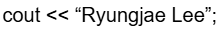

Project Shadow Mapping
3D Graphics


3D Graphics
This project implements shadow mapping, a widely-used real-time graphics technique that enables realistic shadow rendering in 3D applications. The core concept involves rendering the scene from the light source's perspective to capture depth information, then comparing those depths during the main render pass to determine whether fragments are in shadow or illuminated.
The implementation treats the light source as a perspective camera, generating view and projection matrices to create a virtual depth map. This depth map is stored in a framebuffer texture and subsequently used during forward rendering to apply realistic shadows with Phong lighting and exponential fog effects. The project provides interactive debugging tools to visualize the shadow map, light frustum, and various shadow parameters.
LoadAsDepthTexture()
and LoadAsRGBA() methods, implementing proper texture comparison modes and depth formats (16/24/32/32F bits)
with platform-aware fallbacks for WebGL compatibility.ViewMatrix() (world-to-camera) and ToWorldMatrix() (camera-to-world) using orthonormal basis
properties to avoid expensive matrix inversions.renderToDepthBuffer() for depth map generation and renderToScreen() for shadow-aware rendering
using hardware-accelerated shadow projection texture lookups.drawLightFrustum() and drawDepthTexture()
for debugging, along with comprehensive ImGui controls for parameter tuning (FOV, shadow map resolution, depth precision,
polygon offset).
Challenges Faced: The primary challenge was correctly implementing perspective shadow projection, particularly
ensuring proper coordinate space transformations from world → light view → light projection → shadow texture space. Initial attempts
had depth comparison issues requiring careful debugging of the projection matrix and texture coordinate calculations. Another
challenge was handling the differences between desktop OpenGL and WebGL, specifically choosing between TexStorage2D
and TexImage2D based on platform capabilities.
Solutions Implemented: I debugged by visualizing the depth texture and light frustum, which immediately revealed
coordinate space issues. Using ImGui parameter controls allowed real-time experimentation with polygon offset, shadow map
resolution, and depth formats. For platform compatibility, I implemented environment detection using opengl::IsWebGL
and version checks to select appropriate OpenGL functions.
Key Learnings: This project deepened my understanding of the graphics pipeline, particularly the importance of carefully managing coordinate transformations and understanding the perspective divide in homogeneous coordinates. I learned how framebuffer objects enable efficient offline rendering passes and that shadow mapping's quality heavily depends on light frustum configuration and depth precision. Additionally, I gained valuable experience with platform-specific graphics API differences and the practical application of exponential fog for atmospheric effects. The project reinforced that debugging graphics code effectively requires visualization tools—the frustum and depth texture displays were invaluable for understanding complex transformations.